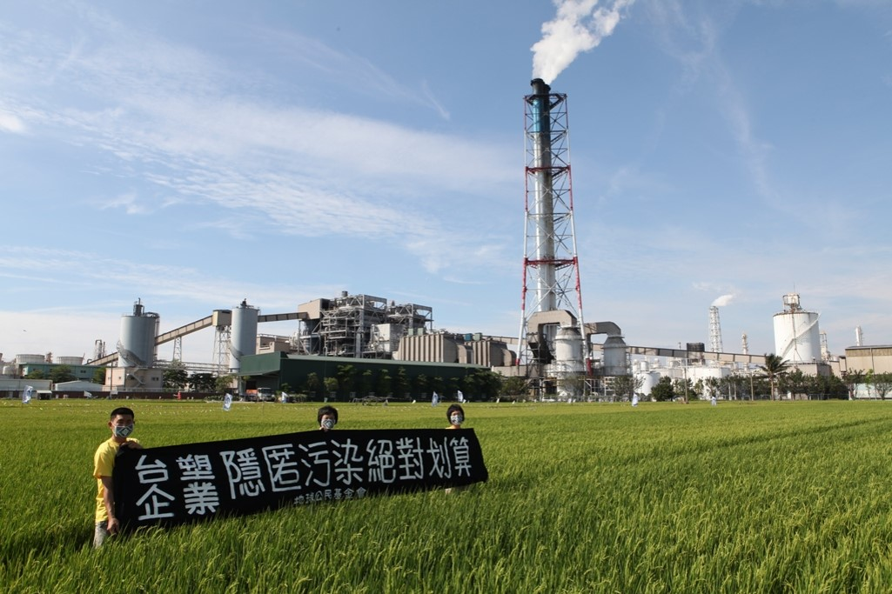

事件名稱：仁大工業區空污致癌
事件地點：高雄市仁武區
事發狀況
工業局委託成大環境微量毒物研究中心執行的健康風險評估計畫結果出爐，仁武、大社、楠梓、左營四區，致癌風險超標，逾一般可受風險的百萬分之一，敏感孩童更逾萬分之一，是一般的百倍以上，環保團體疾呼開發單位應提可行風險管理策略。
這項健康風險評估近期陸續在左營、楠梓、仁武、大社四個區公所舉行說明會，市議員張豐藤表示，報告不能只是歸檔上架，應該將結果納入風險管理計畫中。 報告指出，仁大工業區對四個區致癌風險都超過百萬分之一，仁武、大社、楠梓等地更是一般可承受風險的十七至四十五倍，對孩童敏感族群致癌風險更超過萬分之一，也就是比一般風險增加百倍以上。
曾擔任環保局長的市議員張豐藤表示，民國一○七年仁大工業區將降編為乙種工業區，但卻無法讓這些工廠停工，仍能讓這些廠商運用殘值繼續污染賺錢，對市民非常不公，應該以這個風險評估為基準，能夠降低一定幅度健康風險的製程更新才能夠核准。
這項健康風險評估近期陸續在左營、楠梓、仁武、大社四個區公所舉行說明會，市議員張豐藤表示，報告不能只是歸檔上架，應該將結果納入風險管理計畫中。王敏玲表示，完整的評估報告應該在網路上資訊公開，讓更多的市民了解，且說明會的呈現也應該淺顯易懂，才能達到與市民風險溝通的目的。
調查結果
市府環保局表示，將針對報告提出的四種物質，做為污染源的評估基礎，揪出污染工廠在哪裡；市府也將與工業局合作，針對污染超過標準的工廠，對於所產生的污染物，要求降到可接受的標準之下，確保民眾生命安全。
仁大工業區服務中心主任鄭雅升指出，報告數據顯示的致癌風險，對業者而言，有改善空間，將會配合政府政策；大社區三奶里長許丁春說，希望政府能夠專業把關，揪出污染超標的工廠，要求減少排放量，維護居民身體健康。
大社里長林英陸表示，工業區造成空氣污染嚴重，地方陳情要求遷走，連他的親姪子才四十多歲，竟因罹患肺癌往生，令家人不能接受，既然工業局數據明確，工業區對居民健康有危害，政府應拿出魄力，要求工業區遷走，維護民眾生命安全。